Mathematical operations
[1]:
import numpy as np
import spectrochempy as scp
from spectrochempy import MASKED
from spectrochempy import DimensionalityError
from spectrochempy import error_
![](data:image/png;base64,iVBORw0KGgoAAAANSUhEUgAAABgAAAAYCAYAAADgdz34AAAAAXNSR0IArs4c6QAAAAlw
SFlzAAAJOgAACToB8GSSSgAAAetpVFh0WE1MOmNvbS5hZG9iZS54bXAAAAAAADx4OnhtcG1ldGEgeG1sbnM6eD0iYWRvYmU6bnM6
bWV0YS8iIHg6eG1wdGs9IlhNUCBDb3JlIDUuNC4wIj4KICAgPHJkZjpSREYgeG1sbnM6cmRmPSJodHRwOi8vd3d3LnczLm9yZy8x
OTk5LzAyLzIyLXJkZi1zeW50YXgtbnMjIj4KICAgICAgPHJkZjpEZXNjcmlwdGlvbiByZGY6YWJvdXQ9IiIKICAgICAgICAgICAg
eG1sbnM6eG1wPSJodHRwOi8vbnMuYWRvYmUuY29tL3hhcC8xLjAvIgogICAgICAgICAgICB4bWxuczp0aWZmPSJodHRwOi8vbnMu
YWRvYmUuY29tL3RpZmYvMS4wLyI+CiAgICAgICAgIDx4bXA6Q3JlYXRvclRvb2w+bWF0cGxvdGxpYiB2ZXJzaW9uIDIuMS4wLCBo
dHRwOi8vbWF0cGxvdGxpYi5vcmcvPC94bXA6Q3JlYXRvclRvb2w+CiAgICAgICAgIDx0aWZmOk9yaWVudGF0aW9uPjE8L3RpZmY6
T3JpZW50YXRpb24+CiAgICAgIDwvcmRmOkRlc2NyaXB0aW9uPgogICA8L3JkZjpSREY+CjwveDp4bXBtZXRhPgqNQaNYAAAGiUlE
QVRIDY1We4xU1Rn/3XPuYx47u8w+hnU38hTcuoUEt/6D2y4RB0ME1BoEd9taJaKh9CFiN7YGp7appUAMNmktMZFoJTYVLVQ0smsy
26CN0SU1QgsuFAaW3WVmx33N677O6XfuyoIxTXqSO/fec+75fd93vt/3/UbDV0aKSZmCpkFMLz3T9utuu2N+o98aDSMBKVAo89z5
y+zEz3ZafcCOfvWdlGCalqKn1Bf71CygTd+mf1esSOnpdMpTb+vWpTZuWVfe3jLPa5tzHYNm0T5N0gpdkkHaDBeGBU6d1/t/fyS8
+/CbqdfUvmsx1PuMgc2bNxv79u1zgd31r+7JH1jbIZKxWRXAcYUQ8IWvBfBXNjEuJWPgMA02NR7C3/pYT9fjdZ3A9tGrWF8YSJHn
qcDz3y7q2T967PZv+gnYJdd1mEZ+62zGDQV/dQgKhmLzDNOXCEWM3j6eTT5Y3w78dOBKJLR1PQf+4ivPj76UPZnssBN+wbM9Aet/
AV81Mf1EEULXYfOobvX2WWQk0aoioXwwSmirOlioY0mu8BIouzYl7P8GV3vpqCCEZvlFz769w08oLDWvyKIyL1asSm28d6WfzA97
ztvvV1kexUMsmhlkULEkuGYmFYC6AvfUrITnwUKl5K79lkjeSSRRTCTbQPd95e1WzMbZSya74XoXAxctCllCnbECMOjZNGRwvzIX
nD85wbkMmKK+U045Dtdi8Qp+SAxU2GTg2bYlC9224pgvmSb54vkVTBQYyhUt2KjAMyMmPjwRQW5Mh2WKwJhlBh6jVGagFM84wZnQ
4bpC0Rt4pk1PbSt0NDcxDA5xryosDHWgtbM0DGZDWLSoiDMDYeQnGVrmOThxLozB0RAaahzkJzjKNqcIQBymJFMkOlN8Dqjpg0XY
Tx5xO/QbmmUrqIjGJznq47TqTaClKYfjp+PInLMwnOdYvtQBZ2XcunQY+VwIo4U4muoFEjVEFE6lQyEUKzHYfgQG9ylCyngU+Cxj
tOqxCDGHcCsOMCs6iQul5ZiStdATYxjMZXDLTUVwLY8Jey4uOh2IxjwsrP8UXJYxUrkZrghBahzV5iXU6gNkq0Z1EzIsUBUSCV2n
EOHo0LVxHCpuxabJJdhi5PFnvw5vLXwXIfNZvD/+JNo/X40NegE54sUaazl+UL8XD1x+FB9Ijjt4EQfdGN6J/x131LwIV9ap/AYs
0x1fz1ZKFbh6A7qKy/By9Dg6G36Ep91vUJJ15Cqr0Z67E8/HzmBrw1OwxWyM+3Mo6BAuSB17oyfx0Oyl2DN0Hqs/70Cx6hBCvESF
UY1ShWXZZEE7OTAYxZzaPH4TuoiusZvRnunFy2NbiHYuBp2vB66srX4vMEjpRKPxKXmnoQ4+Mn4DPiv8CYcrs3GfNUXJLtM+alSO
hrMj/KT+wBNW3+E/2liywNO3iSflbaFva/+stGDTxE0E9Sjaox8HBhxpEamzMGSEaFKg+mjEddzDh1MxTDq3YV1kGBsjfwW3S9Cq
anjmko+ndlb1UR3s6K8JlfphNWq9Ew/7c61T2BB/EbcaNkb8GBaE0tANH7/M34PLdhJDzjIcL9xPbdTG6zyM72Y+wXPHmvB489No
fm0b5HnbQ9Rgp/7DSSd29AeVvPeNyK6JcYl/yQVi5dBjuGvoV/gaJe47s45QUxrDmcYX0MBsdF7egvXZ7+O0vZA4X8QmOQWjlSK7
RDz5wIM30gp9UbWcGjXxhzdDu1SiNSpx6kcQB57rPnr/3dlkZarWLnlRq5oPET1dOCIOk4wALib9eeS5iygfhkd09H0DWphB/+gs
+PcOAS+ssrFmmXXgVfR0de9cpbAJfH3Q1jofW9DZk56dDcVsq9YcsoUMEd1qyLoT3BX1YiyHMJuk97hyjqIoE91t+NcTLeN0ZrfM
oXatZbu6G0h4VG+ibqq0IJVK6cAjo6serG3vSUezCMct0yQeSOFJSUImqb2qbknUpDqlZxE0QZ+ZUpSlZx79h4Nda6zef9dlk121
JDjbR5XggPRZlRnS6bRQRtLpn4++cuie/Yvn2svmNxuLw9WCcYIl4fEoTEGiSTUqJdfgU+8ROqf1iMkLzS389YtNPXc/PH8l8ONB
JZkHD+4JtD04HmVEDWWErmBhzV2/2LB1bemJG6krzv2S6NOHUgtEP0Oif5pE/3fHoruP7N8RiP61GArzSwbUhJJQpXJKiKbfr/3b
IhKq76sKPUdF9NW/LSqfSn6vjv8C45H/6FSgvZQAAAAASUVORK5CYII=)
|
SpectroChemPy's API - v.0.6.11.dev82 © Copyright 2014-2025 - A.Travert & C.Fernandez @ LCS |
Ufuncs (Universal Numpy’s functions)
A universal function (or ufunc in short) is a function that operates on numpy arrays in an element-by-element fashion, supporting array broadcasting, type casting, and several other standard features. That is, a ufunc is a “vectorized” wrapper for a function that takes a fixed number of specific inputs and produces a fixed number of specific outputs.
For instance, in numpy to calculate the square root of each element of a given nd-array, we can write something like this using the np.sqrt functions :
[2]:
x = np.array([1.0, 2.0, 3.0, 4.0, 6.0])
np.sqrt(x)
[2]:
array([ 1, 1.414, 1.732, 2, 2.449])
As seen above, np.sqrt(x) return a numpy array.
The interesting thing, it that ufunc’s can also work with NDDataset .
[3]:
dx = scp.NDDataset(x)
np.sqrt(dx)
[3]:
| name | NDDataset_693d325d |
| author | runner@fv-az1784-573 |
| created | 2025-02-14 13:12:58+00:00 |
| history | \0\0\02025-02-14 13:12:58+00:00> Ufunc sqrt applied.\0\0\0\n DATA |
| title | sqrt( |
| values | [ 1 1.414 1.732 2 2.449] |
| size | 5 |
List of UFuncs working on NDDataset:
Functions affecting magnitudes of the number but keeping units
negative(x, **kwargs): Numerical negative, element-wise.
absolute(x, **kwargs): Calculate the absolute value, element-wise. Alias: abs
fabs(x, **kwargs): Calculate the absolute value, element-wise. Complex values are not handled, use absolute to find the absolute values of complex data.
conj(x, **kwargs): Return the complex conjugate, element-wise.
rint(x, **kwargs) :Round to the nearest integer, element-wise.
floor(x, **kwargs): Return the floor of the input, element-wise.
ceil(x, **kwargs): Return the ceiling of the input, element-wise.
trunc(x, **kwargs): Return the truncated value of the input, element-wise.
Functions affecting magnitudes of the number but also units
sqrt(x, **kwargs): Return the non-negative square-root of an array, element-wise.
square(x, **kwargs): Return the element-wise square of the input.
cbrt(x, **kwargs): Return the cube-root of an array, element-wise.
reciprocal(x, **kwargs): Return the reciprocal of the argument, element-wise.
Functions that require no units or dimensionless units for inputs. Returns dimensionless objects.
exp(x, **kwargs): Calculate the exponential of all elements in the input array.
exp2(x, kwargs): Calculate 2p for all p in the input array.
expm1(x, **kwargs): Calculate
exp(x) - 1for all elements in the array.log(x, **kwargs): Natural logarithm, element-wise.
log2(x, **kwargs): Base-2 logarithm of x.
log10(x, **kwargs): Return the base 10 logarithm of the input array, element-wise.
log1p(x, **kwargs): Return
log(x + 1), element-wise.
Functions that return numpy arrays (Work only for NDDataset)
sign(x): Returns an element-wise indication of the sign of a number.
logical_not(x): Compute the truth value of NOT x element-wise.
isfinite(x): Test element-wise for finiteness.
isinf(x): Test element-wise for positive or negative infinity.
isnan(x): Test element-wise for
NaNand return result as a boolean array.signbit(x): Returns element-wise
Truewhere signbit is set.
Trigonometric functions. Require unitless data or radian units.
sin(x, **kwargs): Trigonometric sine, element-wise.
cos(x, **kwargs): Trigonometric cosine element-wise.
tan(x, **kwargs): Compute tangent element-wise.
arcsin(x, **kwargs): Inverse sine, element-wise.
arccos(x, **kwargs): Trigonometric inverse cosine, element-wise.
arctan(x, **kwargs): Trigonometric inverse tangent, element-wise.
Hyperbolic functions
sinh(x, **kwargs): Hyperbolic sine, element-wise.
cosh(x, **kwargs): Hyperbolic cosine, element-wise.
tanh(x, **kwargs): Compute hyperbolic tangent element-wise.
arcsinh(x, **kwargs): Inverse hyperbolic sine element-wise.
arccosh(x, **kwargs): Inverse hyperbolic cosine, element-wise.
arctanh(x, **kwargs): Inverse hyperbolic tangent element-wise.
Unit conversions
Binary Ufuncs
add(x1, x2, **kwargs): Add arguments element-wise.
subtract(x1, x2, **kwargs): Subtract arguments, element-wise.
multiply(x1, x2, **kwargs): Multiply arguments element-wise.
divide or true_divide(x1, x2, **kwargs): Returns a true division of the inputs, element-wise.
floor_divide(x1, x2, **kwargs): Return the largest integer smaller or equal to the division of the inputs.
Usage
To demonstrate the use of mathematical operations on spectrochempy object, we will first load an experimental 2D dataset.
[4]:
d2D = scp.read_omnic("irdata/nh4y-activation.spg")
prefs = d2D.preferences
prefs.colormap = "magma"
prefs.colorbar = False
prefs.figure.figsize = (6, 3)
_ = d2D.plot()
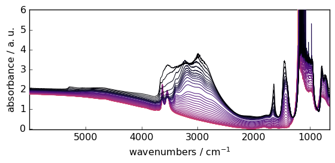
Let’s select only the first row of the 2D dataset ( the squeeze method is used to remove the residual size 1 dimension). In addition, we mask the saturated region.
[5]:
dataset = d2D[0].squeeze()
_ = dataset.plot()
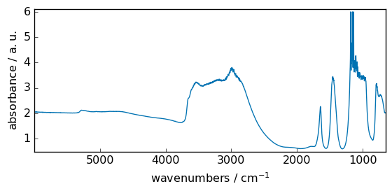
This dataset will be artificially modified already using some mathematical operation (subtraction with a scalar) to present negative values, and we will also mask some data
[6]:
dataset -= 2.0 # add an offset to make that some of the values become negative
dataset[1290.0:890.0] = scp.MASKED # additionally we mask some data
_ = dataset.plot()
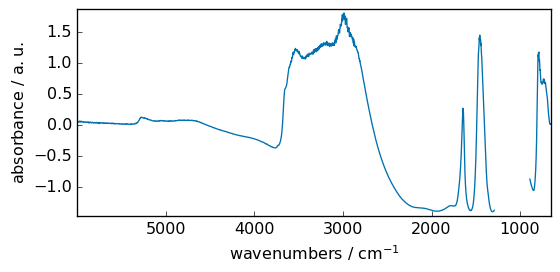
Unary functions
Functions affecting magnitudes of the number but keeping units
negative
Numerical negative, element-wise, keep units
[7]:
out = np.negative(dataset) # the same results is obtained using out=-dataset
_ = out.plot(figsize=(6, 2.5), show_mask=True)
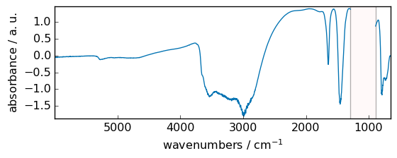
abs
absolute (alias of abs)
fabs (absolute for float arrays)
Numerical absolute value element-wise, element-wise, keep units
[8]:
out = np.abs(dataset)
_ = out.plot(figsize=(6, 2.5))
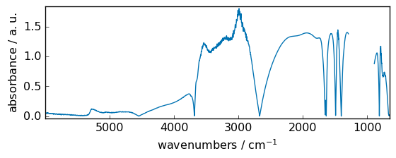
rint
Round elements of the array to the nearest integer, element-wise, keep units
[9]:
out = np.rint(dataset)
_ = out.plot(figsize=(6, 2.5)) # not that title is not modified for this ufunc
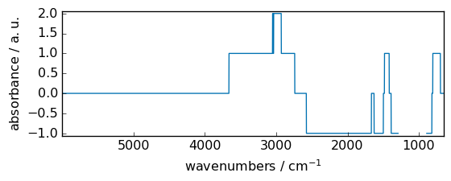
floor
Return the floor of the input, element-wise.
[10]:
out = np.floor(dataset)
_ = out.plot(figsize=(6, 2.5))
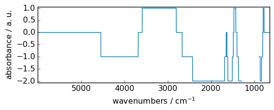
ceil
Return the ceiling of the input, element-wise.
[11]:
out = np.ceil(dataset)
_ = out.plot(figsize=(6, 2.5))
trunc
Return the truncated value of the input, element-wise.
[12]:
out = np.trunc(dataset)
_ = out.plot(figsize=(6, 2.5))
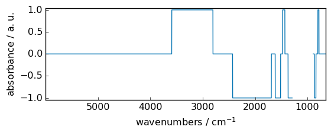
Functions affecting magnitudes of the number but also units
sqrt
Return the non-negative square-root of an array, element-wise.
[13]:
out = np.sqrt(
dataset
) # as they are some negative elements, return dataset has complex dtype.
_ = out.plot_1D(show_complex=True, figsize=(6, 2.5))
WARNING | (UserWarning) Given trait value dtype "float64" does not match required type "float64". A coerced copy has been created.
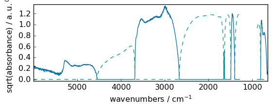
square
Return the element-wise square of the input.
[14]:
out = np.square(dataset)
_ = out.plot(figsize=(6, 2.5))
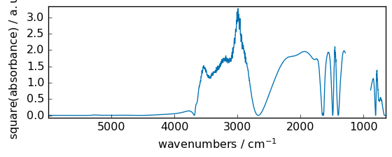
cbrt
Return the cube-root of an array, element-wise.
[15]:
out = np.cbrt(dataset)
_ = out.plot(figsize=(6, 2.5))
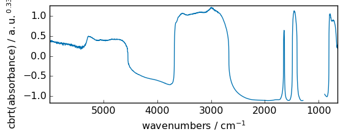
reciprocal
Return the reciprocal of the argument, element-wise.
[16]:
out = np.reciprocal(dataset + 3.0)
_ = out.plot(figsize=(6, 2.5))
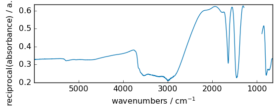
Functions that require no units or dimensionless units for inputs. Returns dimensionless objects.
exp
Exponential of all elements in the input array, element-wise
[17]:
out = np.exp(dataset)
_ = out.plot(figsize=(6, 2.5))
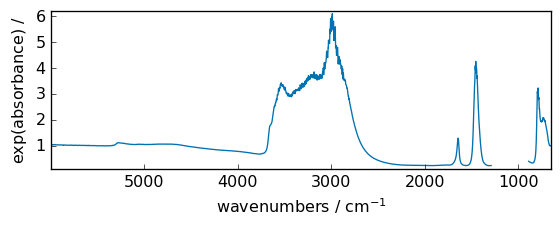
Obviously numpy exponential functions applies only to dimensionless array. Else an error is generated.
[18]:
x = scp.NDDataset(np.arange(5), units="m")
try:
np.exp(x) # A dimensionality error will be generated
except DimensionalityError as e:
error_(DimensionalityError, e)
ERROR | DimensionalityError: Cannot convert from 'm' to ''
Function `exp` requires DIMENSIONLESS input
exp2
Calculate 2**p for all p in the input array.
[19]:
out = np.exp2(dataset)
_ = out.plot(figsize=(6, 2.5))
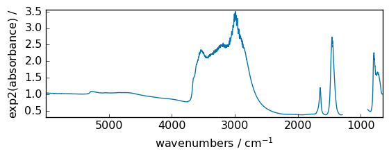
expm1
Calculate exp(x) - 1 for all elements in the array.
[20]:
out = np.expm1(dataset)
_ = out.plot(figsize=(6, 2.5))
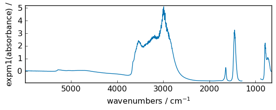
log
Natural logarithm, element-wise.
This doesn’t generate un error for negative numbrs, but the output is masked for those values
[21]:
out = np.log(dataset)
ax = out.plot(figsize=(6, 2.5), show_mask=True)
WARNING | (UserWarning) Given trait value dtype "float64" does not match required type "float64". A coerced copy has been created.
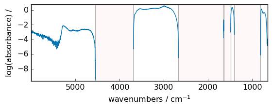
[22]:
out = np.log(dataset - dataset.min())
_ = out.plot(figsize=(6, 2.5))
WARNING | (UserWarning) Given trait value dtype "float64" does not match required type "float64". A coerced copy has been created.

log2
Base-2 logarithm of x.
[23]:
out = np.log2(dataset)
_ = out.plot(figsize=(6, 2.5))
WARNING | (UserWarning) Given trait value dtype "float64" does not match required type "float64". A coerced copy has been created.
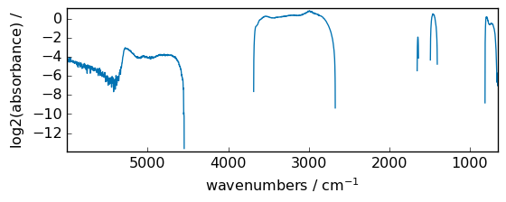
log10
Return the base 10 logarithm of the input array, element-wise.
[24]:
out = np.log10(dataset)
_ = out.plot(figsize=(6, 2.5))
WARNING | (UserWarning) Given trait value dtype "float64" does not match required type "float64". A coerced copy has been created.
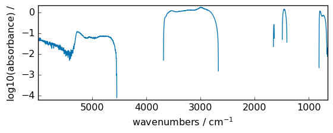
log1p
Return log(x + 1) , element-wise.
[25]:
out = np.log1p(dataset)
_ = out.plot(figsize=(6, 2.5))
WARNING | (UserWarning) Given trait value dtype "float64" does not match required type "float64". A coerced copy has been created.
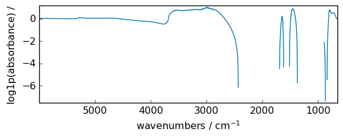
Functions that return numpy arrays (Work only for NDDataset)
sign
Returns an element-wise indication of the sign of a number. Returned object is a ndarray
[26]:
np.sign(dataset)
[26]:
masked_array(data=[ 1, 1, ..., 1, 1],
mask=[ False, False, ..., False, False],
fill_value=1e+20)
logical_not
Compute the truth value of NOT x element-wise. Returned object is a ndarray
[27]:
np.logical_not(dataset < 0)
[27]:
masked_array(data=[ 1, 1, ..., 1, 1],
mask=[ False, False, ..., False, False],
fill_value=True)
isfinite
Test element-wise for finiteness.
[28]:
np.isfinite(dataset)
[28]:
masked_array(data=[ 1, 1, ..., 1, 1],
mask=[ False, False, ..., False, False],
fill_value=True)
isinf
Test element-wise for positive or negative infinity.
[29]:
np.isinf(dataset)
[29]:
masked_array(data=[ 0, 0, ..., 0, 0],
mask=[ False, False, ..., False, False],
fill_value=True)
isnan
Test element-wise for NaN and return result as a boolean array.
[30]:
np.isnan(dataset)
[30]:
masked_array(data=[ 0, 0, ..., 0, 0],
mask=[ False, False, ..., False, False],
fill_value=True)
signbit
Returns element-wise True where signbit is set.
[31]:
np.signbit(dataset)
[31]:
masked_array(data=[ 0, 0, ..., 0, 0],
mask=[ False, False, ..., False, False],
fill_value=True)
Trigonometric functions. Require dimensionless/unitless dataset or radians.
In the below examples, unit of data in dataset is absorbance (then dimensionless)
sin
Trigonometric sine, element-wise.
[32]:
out = np.sin(dataset)
_ = out.plot(figsize=(6, 2.5))
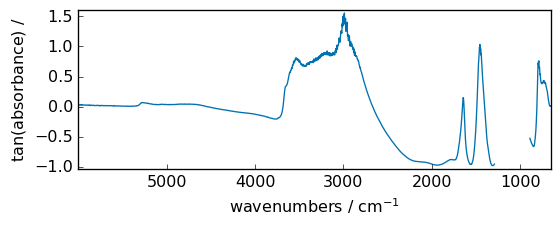
cos
Trigonometric cosine element-wise.
[33]:
out = np.cos(dataset)
_ = out.plot(figsize=(6, 2.5))
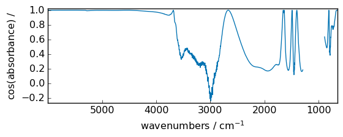
tan
Compute tangent element-wise.
[34]:
out = np.tan(dataset / np.max(dataset))
_ = out.plot(figsize=(6, 2.5))
arcsin
Inverse sine, element-wise.
[35]:
out = np.arcsin(dataset)
_ = out.plot(figsize=(6, 2.5))
WARNING | (RuntimeWarning) invalid value encountered in arcsin
WARNING | (UserWarning) Given trait value dtype "float64" does not match required type "float64". A coerced copy has been created.
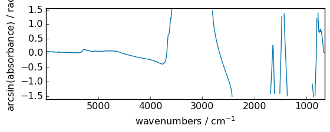
arccos
Trigonometric inverse cosine, element-wise.
[36]:
out = np.arccos(dataset)
_ = out.plot(figsize=(6, 2.5))
WARNING | (RuntimeWarning) invalid value encountered in arccos
WARNING | (UserWarning) Given trait value dtype "float64" does not match required type "float64". A coerced copy has been created.
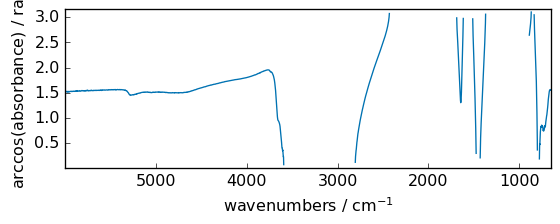
arctan
Trigonometric inverse tangent, element-wise.
[37]:
out = np.arctan(dataset)
_ = out.plot(figsize=(6, 2.5))
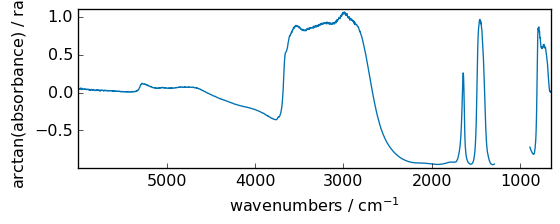
Angle units conversion
rad2deg
Convert angles from radians to degrees (warning: unitless or dimensionless are assumed to be radians, so no error will be issued).
for instance, if we take the z axis (the data magnitude) in the figure above, it’s expressed in radians. We can change to degrees easily.
[38]:
out = np.rad2deg(dataset)
out.title = "data" # just to avoid a too long title
_ = out.plot(figsize=(6, 2.5))
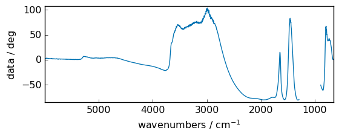
deg2rad
Convert angles from degrees to radians.
[39]:
out = np.deg2rad(out)
out.title = "data"
_ = out.plot(figsize=(6, 2.5))
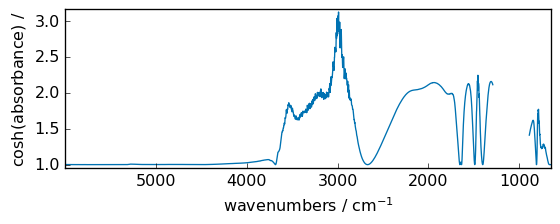
Hyperbolic functions
sinh
Hyperbolic sine, element-wise.
[40]:
out = np.sinh(dataset)
_ = out.plot(figsize=(6, 2.5))
cosh
Hyperbolic cosine, element-wise.
[41]:
out = np.cosh(dataset)
_ = out.plot(figsize=(6, 2.5))
tanh
Compute hyperbolic tangent element-wise.
[42]:
out = np.tanh(dataset)
_ = out.plot(figsize=(6, 2.5))
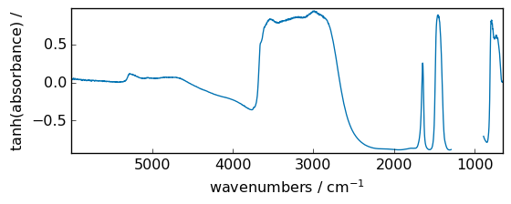
arcsinh
Inverse hyperbolic sine element-wise.
[43]:
out = np.arcsinh(dataset)
_ = out.plot(figsize=(6, 2.5))
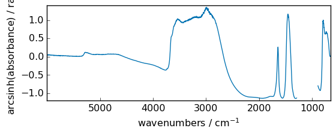
arccosh
Inverse hyperbolic cosine, element-wise.
[44]:
out = np.arccosh(dataset)
_ = out.plot(figsize=(6, 2.5))
WARNING | (UserWarning) Given trait value dtype "float64" does not match required type "float64". A coerced copy has been created.
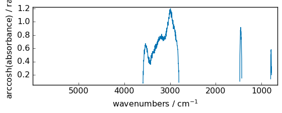
arctanh
Inverse hyperbolic tangent element-wise.
[45]:
out = np.arctanh(dataset)
_ = out.plot(figsize=(6, 2.5))
WARNING | (RuntimeWarning) invalid value encountered in arctanh
WARNING | (UserWarning) Given trait value dtype "float64" does not match required type "float64". A coerced copy has been created.
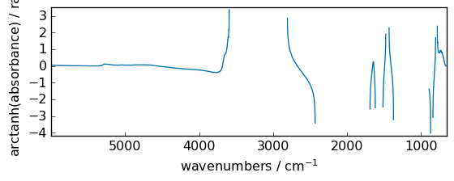
Binary functions
[46]:
dataset2 = np.reciprocal(dataset + 3) # create a second dataset
dataset2[5000.0:4000.0] = MASKED
_ = dataset.plot(figsize=(6, 2.5))
_ = dataset2.plot(figsize=(6, 2.5))
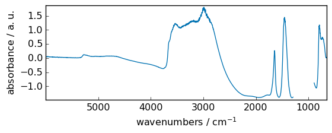
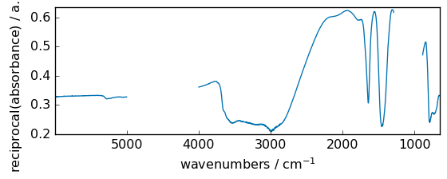
Arithmetic
add
Add arguments element-wise.
[47]:
out = np.add(dataset, dataset2)
_ = out.plot(figsize=(6, 2.5))
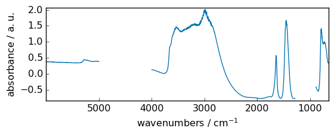
subtract
Subtract arguments, element-wise.
[48]:
out = np.subtract(dataset, dataset2)
_ = out.plot(figsize=(6, 2.5))
multiply
Multiply arguments element-wise.
[49]:
out = np.multiply(dataset, dataset2)
_ = out.plot(figsize=(6, 2.5))
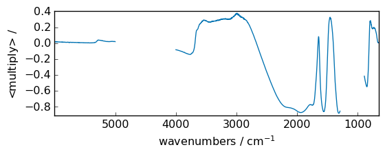
divide
or ##### true_divide Returns a true division of the inputs, element-wise.
[50]:
out = np.divide(dataset, dataset2)
_ = out.plot(figsize=(6, 2.5))
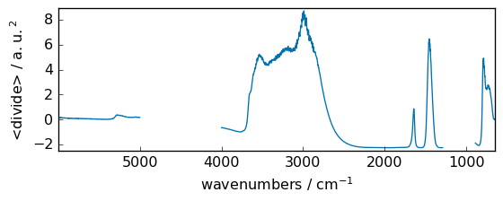
floor_divide
Return the largest integer smaller or equal to the division of the inputs.
[51]:
out = np.floor_divide(dataset, dataset2)
_ = out.plot(figsize=(6, 2.5))
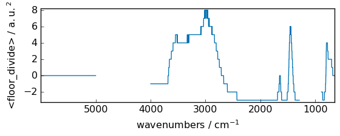
Complex or hypercomplex NDDatasets
NDDataset objects with complex data are handled differently than in numpy.ndarray .
Instead, complex data are stored by interlacing the real and imaginary part. This allows the definition of data that can be complex in several axis, and e .g., allows 2D-hypercomplex array that can be transposed (useful for NMR data).
[52]:
da = scp.NDDataset(
[
[1.0 + 2.0j, 2.0 + 0j],
[1.3 + 2.0j, 2.0 + 0.5j],
[1.0 + 4.2j, 2.0 + 3j],
[5.0 + 4.2j, 2.0 + 3j],
]
)
da
[52]:
| name | NDDataset_6da51860 |
| author | runner@fv-az1784-573 |
| created | 2025-02-14 13:13:07+00:00 |
| DATA | |
| title | |
| values | R[[ 1 2] [ 1.3 2] [ 1 2] [ 5 2]] I[[ 2 0] [ 2 0.5] [ 4.2 3] [ 4.2 3]] |
| shape | (y:4, x:2(complex)) |
A dataset of type float can be transformed into a complex dataset (using two consecutive rows to create a complex row)
[53]:
da = scp.NDDataset(np.arange(40).reshape(10, 4))
da
[53]:
| name | NDDataset_6ec4c731 |
| author | runner@fv-az1784-573 |
| created | 2025-02-14 13:13:07+00:00 |
| DATA | |
| title | |
| values | [[ 0 1 2 3] [ 4 5 6 7] ... [ 32 33 34 35] [ 36 37 38 39]] |
| shape | (y:10, x:4) |
[54]:
dac = da.set_complex()
dac
[54]:
| name | NDDataset_6ec4c732 |
| author | runner@fv-az1784-573 |
| created | 2025-02-14 13:13:07+00:00 |
| DATA | |
| title | |
| values | R[[ 0 2] [ 4 6] ... [ 32 34] [ 36 38]] I[[ 1 3] [ 5 7] ... [ 33 35] [ 37 39]] |
| shape | (y:10, x:2(complex)) |
Note the xdimension size is divided by a factor of two
A dataset which is complex in two dimensions is called hypercomplex (it’s datatype in SpectroChemPy is set to quaternion).
[55]:
daq = da.set_quaternion() # equivalently one can use the set_hypercomplex method
daq
[55]:
| name | NDDataset_6ec4c735 |
| author | runner@fv-az1784-573 |
| created | 2025-02-14 13:13:07+00:00 |
| DATA | |
| title | |
| values | RR[[ 0 2] [ 8 10] ... [ 24 26] [ 32 34]] RI[[ 1 3] [ 9 11] ... [ 25 27] [ 33 35]] IR[[ 4 6] [ 12 14] ... [ 28 30] [ 36 38]] II[[ 5 7] [ 13 15] ... [ 29 31] [ 37 39]] |
| shape | (y:5(complex), x:2(complex)) |
[56]:
daq.dtype
[56]:
dtype(quaternion)